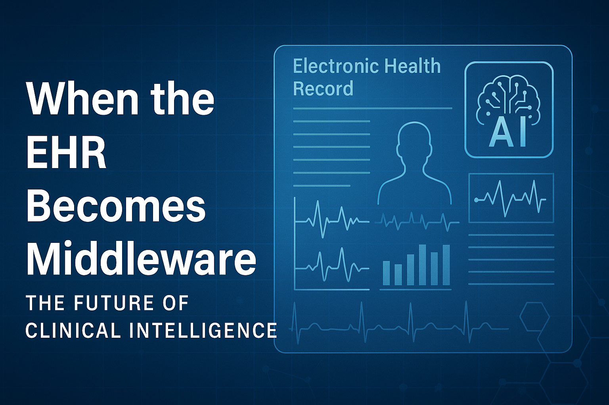
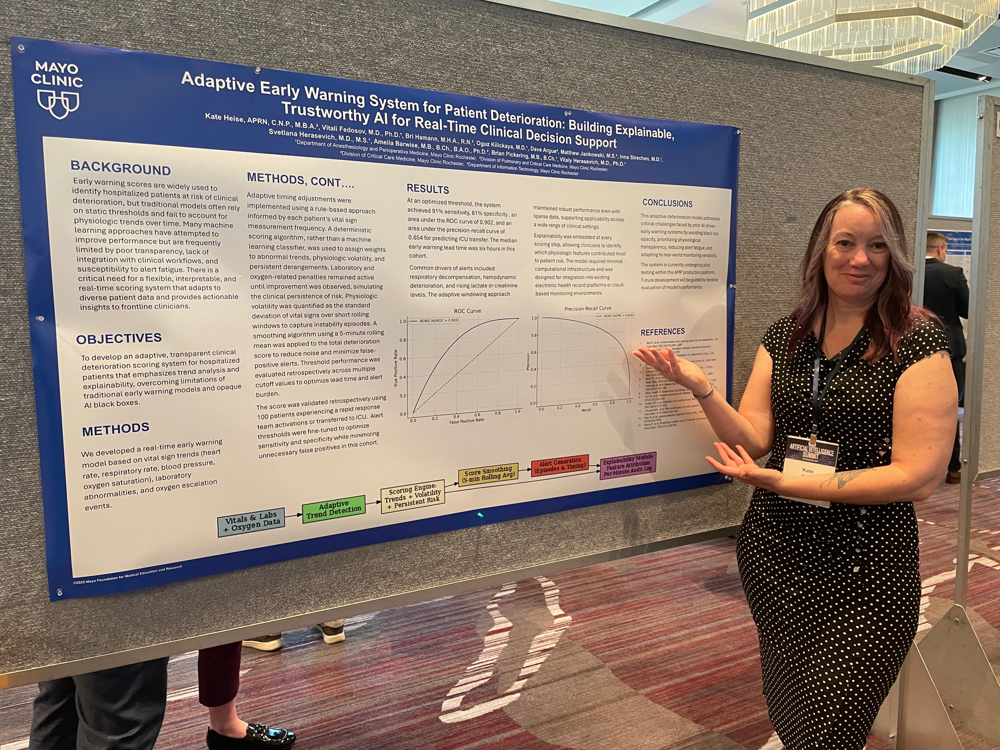

Blog
Short reflections, insights, and ideas from the intersection of critical care, technology, and innovation.
From Feedback to Partnership: Engaging Clinicians in AI Development
February 2026
We’re past the hype phase of AI in healthcare.
The technology is real. The models are improving. The investment is there.
And yet, adoption continues to struggle—not because clinicians resist change,
but because too many tools are still built around clinical work instead of
with the people doing it.
After a recent conversation sparked a lot of engagement, one question kept coming up:
“Okay — so how do we actually do this better?”
The answer isn’t another feedback survey, pilot, or usability review at the end of development.
It requires a structural shift in how we engage clinicians in building technology.
Stop Treating Clinicians as Reviewers
In many development cycles, clinicians are asked to “weigh in” after key decisions
have already been made. By that point, workflows are set, assumptions are baked in,
and feedback becomes cosmetic rather than transformative.
Reviewing a tool is not the same as shaping it.
If a solution materially affects bedside work, clinicians shouldn’t just be consulted.
They should be embedded as partners from the start—present when tradeoffs are discussed,
scope is defined, and priorities are set.
Engagement only works when clinicians have influence, not just voice.
Design for Pressure, Not Policy
Many AI tools are designed for ideal workflows: uninterrupted time, complete data,
predictable staffing, and linear decision-making.
That’s not how healthcare operates.
Real care happens under pressure—at 3 a.m., with competing priorities, incomplete
information, and constant interruption. If a tool doesn’t work in those conditions,
it won’t work at all.
Development teams should pressure-test designs against reality by asking:
- What cognitive task does this remove?
- What new decision does this force?
- What happens if this is ignored?
These questions surface friction early—before it becomes adoption failure.
Prototype in Real Shifts
Conference rooms are safe. Clinical environments are not.
The fastest way to understand whether a tool fits workflow is to observe how it
behaves during real shifts. Watch where clinicians hesitate. Watch what they bypass.
Watch what gets worked around.
Every workaround is data.
Shadowing live care reveals mismatches between design intent and operational reality
that no demo can capture.
Measure What Gets Removed
Engagement metrics often focus on usage: logins, clicks, alerts fired.
These numbers say very little about whether work has actually been reduced.
More meaningful signals include:
- Steps eliminated
- Decisions clarified
- Interruptions avoided
- Time returned to patient care
If a tool adds cognitive load—even subtly—clinicians will feel it immediately,
long before dashboards reflect a problem.
Give Frontline Staff Real Stop Power
Engagement fails when feedback is acknowledged but not acted on.
When frontline clinicians say a tool adds work, increases risk, or disrupts care,
that input should trigger a pause—not a reframe.
This doesn’t slow innovation. It prevents expensive failure.
Sustainable AI requires psychological safety for clinicians to say,
“This doesn’t work.” And governance structures that take that seriously.
The Work That Actually Makes AI Stick
None of this is theoretical. It’s practical, sometimes uncomfortable,
and far more effective than the familiar pattern of pilot, rollout,
and surprise at low adoption.
The future of healthcare AI won’t be defined by smarter algorithms alone.
It will be defined by how well we align technology with the realities of care—
and whether we treat clinicians as true partners in that work.
“If clinicians aren’t part of the build, they will be left carrying the burden.”
Clinical Informatics • AI Implementation • Human-Centered Design • Leadership
Past the Hype: Why AI Still Misses the Bedside
January 2026
We’re past the AI hype phase in healthcare.
At least, we should be.
The technology has matured. The investment is real. The promises are everywhere.
And yet, for many clinicians, the day-to-day experience hasn’t meaningfully improved.
The problem isn’t that clinicians “don’t get AI.”
The problem is that too many AI tools don’t get clinicians.
The Disconnect No One Likes to Name
There remains a persistent gap between those building AI tools and those expected to
use them in real clinical environments.
That gap often shows up between:
- Developers who have never worked a shift at the bedside
- IT teams optimizing for integration rather than workflow
- Physician AI leads who understand the theory of care but not the reality of nursing work
None of this reflects bad intent. But intent doesn’t offset impact.
Meanwhile, bedside staff are asked to absorb yet another tool that promises efficiency—
while quietly adding cognitive load.
When AI Lives Outside Workflow
AI that exists outside real clinical workflows isn’t innovation.
It’s noise.
Dashboards that require extra logins, alerts that interrupt without enabling action,
and tools that shift work instead of removing it all contribute to the same outcome:
clinicians disengage.
Not because they don’t care—but because they’re already carrying too much.
What Actually Matters Now
If we want AI to genuinely improve care, the focus has to shift.
It has to:
- Reduce work, not repackage it
- Respect how clinicians think under pressure
- Be co-designed with the people doing the work—not “rolled out” to them
These are not technical limitations. They are design and governance choices.
The Next Phase of Clinical AI
The future of clinical AI isn’t about smarter models.
It’s about better alignment between technology, people, and practice.
Until that alignment becomes the default—not the exception—healthcare will continue
to see impressive pilots, polished demos, and disappointing adoption.
“AI succeeds at the bedside only when it understands the work happening there.”
AI • Clinical Informatics • Workflow Design • Human-Centered Care
Every conversation about AI in healthcare eventually lands on the same question:
What’s the ROI?
It’s a fair question—but it’s also an incomplete one.
Many of the outcomes we care most about don’t show up cleanly in a spreadsheet:
prevented harm, earlier recognition, cognitive relief, trust. When those things work,
nothing happens—and that makes them notoriously difficult to quantify.
In the rush to demonstrate return, we’ve started to conflate two very different concepts:
automation and delegation.
They are not the same.
Automation Surfaces Risk. Delegation Assigns Responsibility.
Automation can be incredibly powerful. Algorithms are excellent at detecting patterns humans miss—subtle
vital sign trends, gradual lab drift, early signals of deterioration. They can reduce manual work and bring
the right information to the right person faster.
But automation does not own outcomes.
Delegation does.
Delegation requires clarity: who is responsible, what they’re responsible for, and when action is expected.
Automation, when poorly designed, often does the opposite. It surfaces risk without clearly assigning ownership,
creating the illusion that something is being handled when it isn’t.
The work doesn’t disappear. It just becomes invisible.
The Hidden Cost No One Puts in the ROI Deck
When automation is mistaken for delegation, responsibility fragments.
Follow-up becomes assumed rather than explicit. Alerts fire, dashboards populate, tasks are technically “created”—
but no single person is clearly accountable for closing the loop. Over time, this shows up as delayed interventions,
normalized near-misses, and quiet failures that are hard to trace back to any one decision.
These are real costs. They just don’t come with neat dollar signs.
- Cognitive load shifted onto already stretched clinicians
- Time spent reconciling “what the system showed” with “what actually happened”
- Moral distress when tools flag risk but don’t enable action
- Erosion of trust in systems that feel busy but ineffective
This is where ROI quietly leaks away.
Where ROI Actually Lives (Even If It’s Hard to Measure)
If we only define ROI as labor replacement or minutes saved, we miss the point.
The real returns of well-designed automation show up as:
- Fewer delayed escalations
- Clearer handoffs
- Stronger accountability
- Faster learning loops
- Safer systems over time
These returns compound. They improve outcomes, team functioning, and trust.
They just resist simple quantification.
The absence of a clean metric does not mean the absence of value.
A Better Question Than “What’s the ROI?”
Instead of asking what work automation replaces, we should ask:
- Who owns the outcome after the alert fires?
- What happens next—and is that explicit?
- Does this system make humans better at their job, or just busier?
Automation should clarify responsibility, not obscure it.
If no one owns the outcome, the system doesn’t work—no matter how advanced the algorithm.
When AI Flags the Problem, Who Talks to the Patient?
January 2026
AI can tell us who needs attention.
It can flag a rising blood pressure trend, a sudden weight change, a drifting glucose value, or a subtle pattern that suggests someone is quietly heading in the wrong direction. Across health systems globally, these capabilities are expanding rapidly—often faster than the workflows designed to respond to them.
But AI doesn’t talk to patients.
And increasingly, healthcare providers don’t either—at least not in the ways that build understanding outside structured encounters.
A Communication Gap That Crosses Borders
This is not a failure of individuals or professions. It is a systems-level shift happening worldwide.
As care becomes more digitized, follow-up conversations are delegated, scripted, automated, or removed entirely. Non-licensed staff are often tasked with outreach without full clinical context. Meanwhile, providers spend more time interpreting dashboards than hearing lived experience.
The result is a growing gap between what the data says and what life looks like for the patient.
The good news: because this is a global problem, it’s also a global opportunity.
What If Learners Closed the Loop?
Here’s a design idea worth considering:
embed healthcare learners—students, residents, trainees—into AI-triggered follow-up workflows.
Not as observers. Not as clerical support. As active participants in closing the loop between signal and story.
Imagine a workflow like this:
- AI flags a patient based on a concerning trend.
- A learner reviews the data and the context.
- The learner contacts the patient directly.
- They ask open-ended questions: what changed, what’s been hard, what doesn’t make sense, what barriers are real.
- They document insights no algorithm can generate.
This approach scales globally because the principle is universal:
data identifies risk; humans understand meaning.
Designing AI With Learners Is a Global Imperative
If AI is to be used safely and effectively, learners must be trained with the tools they will inherit, not shielded from them.
We need to keep critical thinking at the forefront—by exposing learners to AI outputs and limitations, teaching them to challenge confident answers, and making uncertainty visible instead of hidden.
The risk isn’t that AI gets better. The risk is that we stop practicing the very thinking we need when systems fail quietly.
“If AI flags the problem, humans still have to close the loop.”
AI should expand humanity, not compress it. If technology can surface risk faster, then people should spend more time talking, listening, and understanding how real life interferes with ideal plans.
AI • Patient Safety • Medical Education • Human-Centered Design
When the EHR Becomes Middleware: The Future of Clinical Intelligence

October 2025
As artificial intelligence evolves, the electronic health record (EHR) will no longer serve as the primary interface between clinicians and data — it will become the middleware that connects everything else.
Today, clinicians spend too much time documenting, searching, and reconciling information that systems should already know. But in the near future, documentation will be ambient — captured automatically through voice, motion, and contextual awareness during patient interactions. AI will recognize not only words, but intent, emotion, and physiologic signals, building a complete narrative of the encounter without interrupting the flow of care.
In that model, the EHR becomes a translator, not a destination — the engine that harmonizes structured data from wearables, sensors, devices, and human interaction into a coherent clinical record. It becomes invisible, yet indispensable.
When that happens, the true measure of a successful digital system won’t be how much we enter into it, but how seamlessly it understands what’s happening in real time.
The challenge for healthcare leaders isn’t just building smarter systems — it’s building systems clinicians can trust. Technology should amplify human connection, not replace it. The organizations that succeed will be those that combine ethical AI, thoughtful design, and clinical wisdom into one intelligent, learning infrastructure.
“The future of the EHR isn’t documentation. It’s translation.”
AI • EHR Evolution • Clinical Intelligence
Bridging Innovation and Implementation: The Hidden Pipeline
August 2025
Every great idea in healthcare innovation starts with a spark — a conversation, a frustration, or a moment of “why can’t we just…”
But transforming that spark into something measurable, scalable, and sustainable requires more than a good idea. It needs a pipeline.
Over the past few years, I’ve seen countless brilliant concepts stall between pilot and practice. It’s not a lack of creativity or data —
it’s the missing structure that turns innovation into implementation. That’s where I’ve focused much of my work: building frameworks like
RAPID that bridge bedside insight and enterprise systems.
The key is closing the loop — connecting those who see the problems with those who can solve them, and ensuring the
solution doesn’t stop at a single unit, department, or site. That’s where digital platforms, thoughtful data pipelines, and human-centered design converge.
If we can master that bridge — the space between ideas and implementation — we can make healthcare innovation not just possible, but predictable.
“Innovation isn’t just about creating new things. It’s about making good ideas unavoidable.”
Innovation • RAPID • AMP/CEDAR • Leadership
Adaptive Early Warning at the Mayo Clinic AI Summit
July 2025

Today I had the opportunity to present my poster at the Mayo Clinic AI Summit on a project close to my heart: using adaptive time frames and volatility metrics to improve early warning systems for patient deterioration.
Instead of static thresholds or fixed time windows, I developed a model that adapts based on how often vitals and labs are checked. The goal is to improve real-time alerting and reduce noise while still catching critical changes early.
This is part of my ongoing work to build smarter, context-aware clinical tools that actually work for frontline teams — because in healthcare, timing isn't everything… but it's close.
It was inspiring to see the energy around healthcare AI today — from predictive models to workflow optimization — and to share space with others passionate about using data responsibly and effectively.
I’m especially proud that this project brings together my background in nursing, as a nurse practitioner, operations, and analytics.
More to come soon. I’m always up for collaborating on meaningful projects at the intersection of care and computation.
AI Summit • Predictive Modeling • Patient Deterioration
Why We Built a Conference That Doesn’t Require a Plane Ticket
December 2024
The Critical Care Stay Conference started with a simple idea: what if meaningful professional development didn’t require leaving the hospital, using PTO, or paying hundreds in registration fees?
We brought that idea to life — and in doing so, created a new kind of learning space grounded in accessibility, relevance, and community.
Equity • Professional Development • Collaboration
What Makes RAPID Work: Innovation from the Bedside Up
May 2024
When we created RAPID, we weren’t just solving problems — we were building a new way to surface them. Frontline staff are often closest to the issues, yet furthest from the decision-making process.
RAPID gave them a structured, visible, and fast way to elevate insights to leadership — and that changed everything.
Frontline Innovation • Leadership • Systems Change